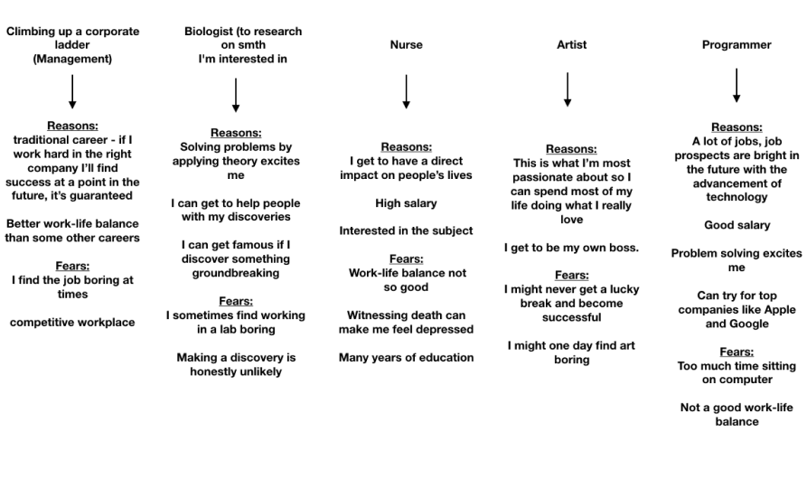
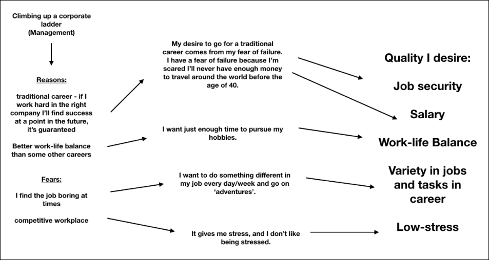
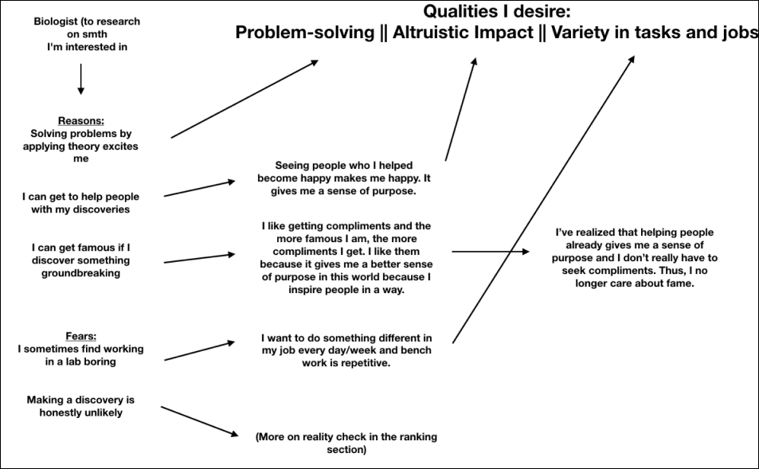
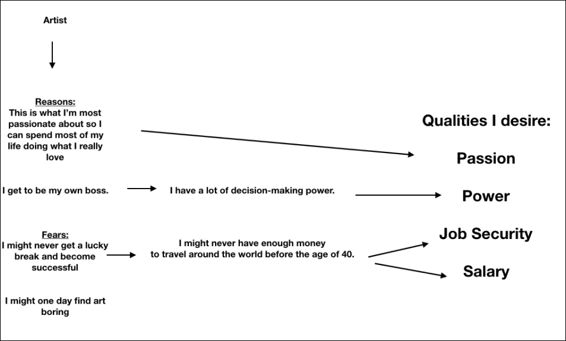
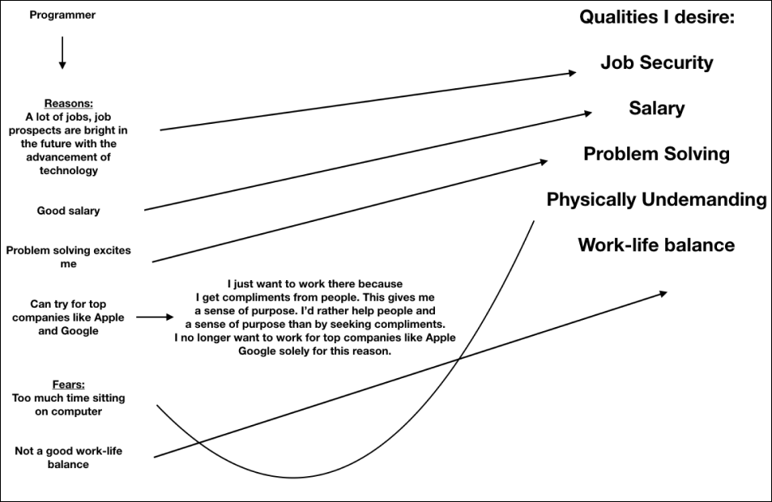
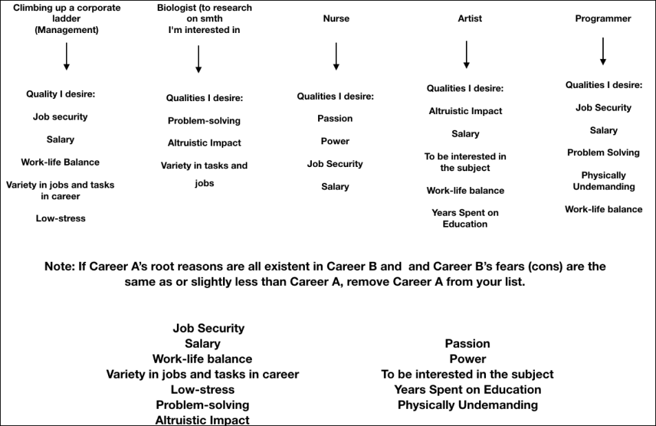

Do this reflection on a piece of paper. For easy follow - through, we’ll be providing diagrams after each step as an example of what you should be doing.
List all the career paths you’re considering. This can also be in the form of goals if the path you’re considering is not traditional or conventional and rather entrepreneurial. You can also list those careers you do not really consider, but you also have no idea why you never considered it in the first place. Maybe you’re just conflicting between two career paths. That’s okay, list those two. Limit the list to twelve career paths. But this does not mean you must have twelve.
For each career path, list 3-4 reasons why you’re considering this career, and 3-4 reasons (fears) why you’re not already going for this career. (It is not a must to have 3 reasons but it’s better to do so). Remember, the reasons are usually your desires of what you want in your life.
This is the fun part. Dig deeper into each of the reasons. Ask why you’re going for that particular quality in your career. For example, the root of your desire for a high salary could be just to go on that particular trip around the world. Maybe you don’t want to be rich, you just want to pursue your hobbies with enough money. Maybe your desire to help others, is just because of the social reputation you receive as a result. Get to the heart of all those desires. Maybe your desires are actually imposters. Maybe you don’t really want to be an engineer, maybe it’s your parents who want you to be engineers. Maybe you don’t really want to be a scientist, rather it’s the thought of making a groundbreaking discovery that excites you. Once you get to the HEART of all your desires and reasons for all your careers, you might find that some of them overlap with one another. You might find that the number of your root reasons is less than your reasons in step 3. You should also ask yourself the question, is it actually worth going into this career just because I desire this quality, or can I find this particular quality in other careers as well. If you find that it’s not worth it, and you can’t find any more reasonable reasons to go for that career path, cancel it out. The point is to ask yourself ‘why’ again, and again, and again, … and again, until you get to the roots of your reasons. Finally, make a list of all those root reasons in another section of your paper. They’ll be important later.
Dig deeper into your fears for each of your careers. Ask why you’re scared of that particular thing which is making you not settle for that career. Is it the fear of failure? Maybe it’s the long and rigorous training required for the career (e.g. health careers). Dig deeper. Maybe you’re not scared of failure, but rather the thought of your parents being disappointed in you. Then, ask yourself why you don’t want your parents to be disappointed in you. Maybe your fear of failure stems from the fact that it would confirm a certain trait that you have which disgusts you. Ask why to yourself repeatedly and make a list of all those root ‘fears’ in that same section in which you put your reasons.
You may now find that some of your fears for a particular career are the opposite of some of your reasons for another career. Make a final list of all the qualities that are present in your previous two lists, that do not contradict each other, as demonstrated by the diagram. If two or more of your reasons are similar to each other, you may combine them into one.
Confused? Here’re the example diagrams.
    By now, you should have a final list of all qualities you desire in a career, and also the career paths which still remain in your consideration. Narrow your list down to four career paths and four qualities (criteria) and we will rank them on the next page.